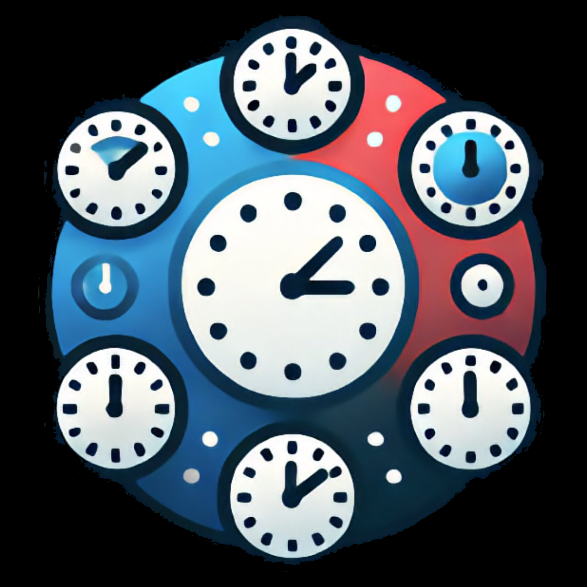

Dag
Uge
Måned
☁️
⚙️
Vælg tidspunkt
--
:
--
Timer
Kvarter
Annuller
OK
Ugeprogrammøde §12 Stk.1
Mødetid der falder i pausen tæller som arbejdstid
15 min
30 min
45 min
60 min
Eller indtast:
Annuller
OK
Del Time App
time-app.dk
📤 Del
💾 Gem
Luk
···
‹
›
Start
––:––
→
Slut
––:––
– –
0 kr.
Dagsløn
4-DAGS UGE
⚠️ OT er sket men ingen type er valgt — beregnet som
uvarslet
per §6e. Vælg Varslet eller Uvarslet OT ovenfor.
Normal arbejdstid
–
OT 1. time
–
OT 2. time
–
OT 3.+ time (+135%)
–
Forskudt tid +110 kr/t §7
–
Weekend/helligdag §8
–
Tillæg
–
🔵 Weekend-periode §8 auto-beregnet — fre 20:00 – man 06:00
Overarbejde + Tillæg
§6 §7 §8 §12
Varslet OT
Uvarslet OT
⚡ Hvor mange OT-timer var varslet?
0
30M
1T
1½T
2T
Ingen pause
⚡
Mixed OT
▾ Tryk for at ændre
Sen frokost
Diæt
Møde
Kørsel
Helligdag
10% enkeltdag
Note
GEM DAG →
✉️ Send dag
🖨 PDF dag
🗑 Slet dag
Uge –
‹
›
0
t
Timer
0
Kr.
0
t
Overtid
0
Dage
🖨 PDF
📊 Excel
📅 Kalender
✉️ Mail
—
‹
›
0
t
Timer
0
Kr.
0
t
Overtid
0
Dage
I alt →
🖨 PDF
📊 Excel
✉️ Mail
2026
Årsoversigt
‹
›
—
Timer
—
Kr.
—
Overtid
—
Dage
← MÅNED
🖨 PDF
📊 Excel
✉️ Mail
Indstillinger
Fiktionsoverenskomst 2025–2027
Produktioner
▾ Vis
＋ Ny produktion
Detaljer ·
(ingen valgt)
Personligt
Navn
Email produktion
Send ugeseddel til
Produktionstitel
Produktionsselskab
Til udskrifter og ugesedler
Arbejdstidsmodel §4 / §5
5-dages
8t/dag · OT efter 8t
4-dages §5
10t/dag · OT efter 10t
Fridag placering
§5 stk. 3 / stk. 4
Fredag
Mandag
Løn §3
Manuel dagløn
Fast aftalt dagssats — overskriver beregnet løn
Mindsteløn
Kr. pr. uge (40 timer)
Personligt tillæg
Erfaring, kørekort, DMX mm. kr/uge
Diæt-sats §14
Kr/dag (MK-cirkulære, 2025: 597)
Tillidshverv §15 Stk.3
Fast 500 kr/uge — vælg én eller ingen
Talsmand
Arbejdsmiljørep
Samlet ugeløn
OT beregnes på mindsteløn §3
10.380 kr.
Normaldagsløn
8t/dag (normal uge §4)
—
GEM PRODUKTION
Tillægsoversigt
▾ Vis
Varslet OT:
+50%
(1.t) ·
+60%
(2.t) ·
+135%
(3.t+)
Uvarslet OT:
+75%
(1.t) ·
+100%
(2.t) ·
+135%
(3.t+)
Forskudt kl. 19–06 (hverdage):
+110 kr/t
Weekend fre 20:00 – man 06:00:
+75%
(min. 4t)
Pension:
9,5%
af normalløn
Sikkerhedskopi
▾ Vis
Sidst gemt
Henter…
Gem en sikkerhedskopi af alle dine data. Brug filen hvis du skifter telefon eller mister data.
☁️ GEM BACKUP TIL FILER
📂 HENT BACKUP FRA FIL
iPhone:
Vælg
Gem i Filer
i share sheet.
Computer / Android:
Lander i
Hentede filer
.
Filnavn:
timeapp-backup-DATO.json
Om & support
▾ Vis
📱 Del appen
Del Time App med kolleger via QR-kode. De scanner og kommer direkte til time-app.dk.
VIS QR-KODE
💬 Feedback & forslag
Hjælp os med at gøre Time App bedre. Send en mail om en fejl, et forslag, eller bare en hilsen.
🐛 RAPPORTER FEJL
💡 FORESLÅ FORBEDRING
❤️ SEND HILSEN
Sendes til thomas@ditzel.dk
☕ Støt udvikleren
Time App er gratis og bygges i fritiden. Har du glæde af appen og lyst til at give en kop kaffe, sætter jeg pris på det. Tak ☕
MOBILEPAY
26 21 47 09
📋 KOPIER NUMMER
☕ ÅBN MOBILEPAY
ℹ️ Om appen
📖 Manual & hjælp
→
🌐 Om Time App
→
Fiktionsoverenskomst 2025-2027
⬆
Ny version klar
Opdater for at få de seneste rettelser
Opdater nu
✕
Ny version
·
Hvad er nyt ✦
Forstået →
Tilføj til hjemmeskærm
Installer Time App som en rigtig app
Installer
×
⬆️
Tilføj til hjemmeskærm
Tryk
Del
→
Føj til hjemmeskærm
✕
§
Din beregning
Tryk hvor som helst for at lukke